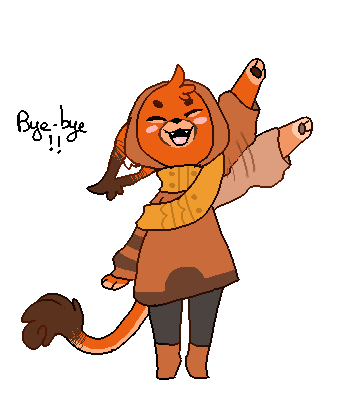

Vous continuez votre chemin, et arrivez enfin à un endroit plus éclairé...La route!
"Tu vois cette route! Si tu la suis, tu rentreras chez toi, à coup sûr." Te dit Aki, affichant un air légèrement triste sur le visage.
"Tu vas me manquer...Reviens vite nous voir !"
